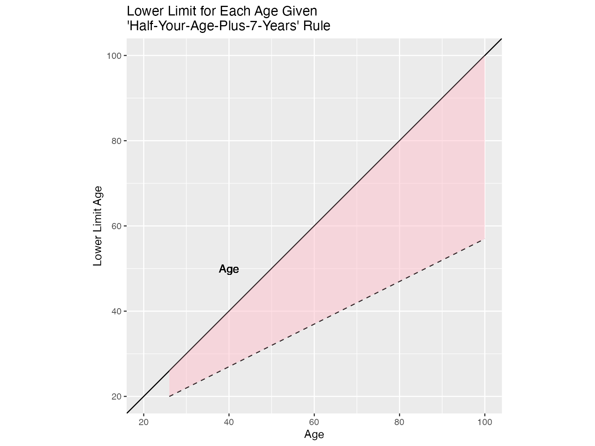

age <- c(18:100)
lower_lim <- lower_limit(age)
age_df <- as.data.frame(cbind(age, lower_lim))
slope <- diff(range(age_df$lower_lim)) / diff(range(age_df$age))
ggplot(age_df, aes(x = age, y = lower_lim)) +
geom_line(linetype = "dashed") +
geom_abline(intercept = 0, slope = 1, linetype = "solid", color = "black") +
geom_ribbon(aes(ymin = pmin(age, lower_lim), ymax = pmax(age, lower_lim)),
fill = "pink", alpha = 0.5) +
geom_text(aes(x = 30, y = 18, label = "Lower Limit for Age of Partner"), color = "darkred", angle = atan(slope) * (180 / pi), hjust = 0) +
geom_text(aes(x = 40, y = 50, label = "Age"), color = "black") +
labs(
title = "Lower Limit for Each Age Given \n'Half-Your-Age-Plus-7-Years' Rule",
x = "Age",
y = "Lower Limit Age"
) +
coord_fixed(ratio = 1) + # Set the aspect ratio to 1
scale_x_continuous(limits = c(20, 100)) + # Set x-axis limits
scale_y_continuous(limits = c(20, 100))
#> Warning: Removed 8 rows containing missing values (`geom_line()`).
#> Warning: Removed 83 rows containing missing values (`geom_text()`).